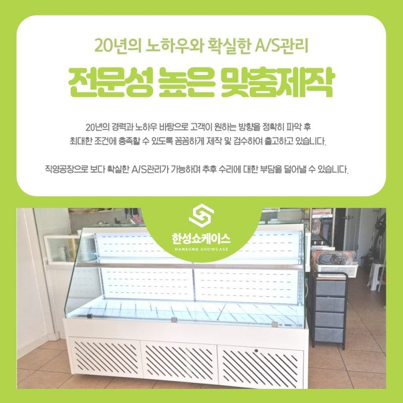
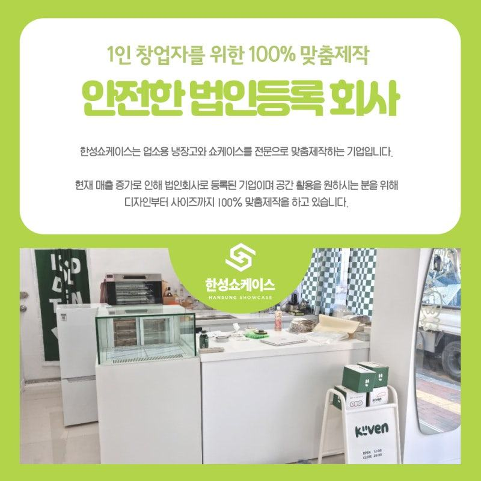
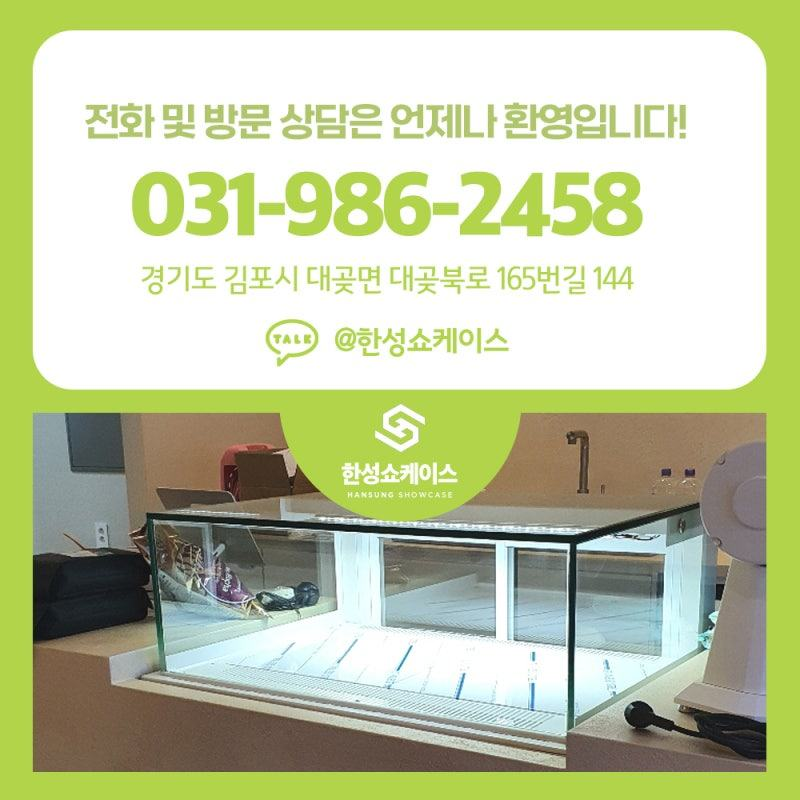
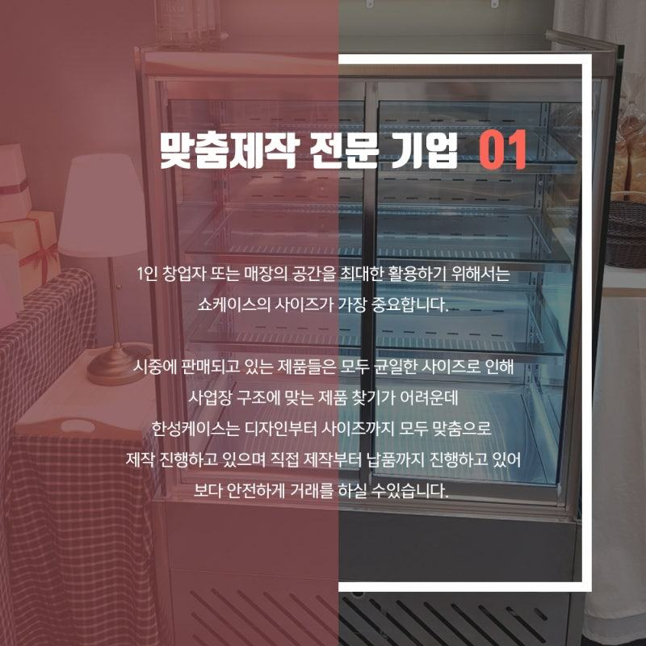
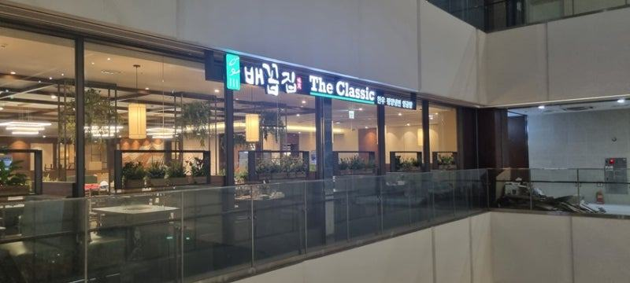

과일진열쇼케이스
과일쇼케이스 업체 고를 때, 청과 매장을 아는 곳인지 보는 법

과일쇼케이스 업체는 과일마다 다른 건조·냉해 문제를 알고 냉기와 습도 설계를 설명할 수 있는지, 경사 선반·평대 같은 청과 진열 구조를 직접 만들어 봤는지, 설치 뒤 A/S까지 직접 책임지는지로 고르시면 됩니다. 일반 냉장 진열대만 만들어 본 곳은 과일 매장 특유의 조건을 놓치기 쉽습니다.
안녕하세요. 과일가게와 청과 코너에 맞춘 진열 쇼케이스를 직접 제작하는 한성쇼케이스입니다.
과일쇼케이스를 알아보시는 사장님들은 처음엔 냉장 진열대면 다 비슷하지 않을까 생각하십니다. 그런데 막상 들여놓고 보면 딸기는 마르고, 바나나는 검게 변하고, 둥근 과일은 선반에서 굴러 떨어지는 일이 생기죠.
과일은 수확한 뒤에도 숨을 쉬고, 종류마다 견디는 온도와 습도가 다른 까다로운 상품입니다. 그래서 과일쇼케이스는 어느 업체에 맡기느냐에 따라 결과물 차이가 크게 납니다.
오늘은 과일쇼케이스 업체를 비교할 때 청과 매장을 제대로 이해하는 곳인지 가려내는 기준을 정리해 드리겠습니다.
1. 과일 조건을 먼저 물어보는지
좋은 업체는 크기보다 무슨 과일을 파는지부터 묻습니다. 껍질 얇은 베리류, 찬 곳에 약한 열대 과일, 단단한 사과와 배는 같은 칸에 두기 어려운데, 이런 차이를 듣고 칸 나눔과 냉기 흐름을 제안하는지 보세요.
상담에서 습도 이야기가 한 번도 나오지 않는다면 주의가 필요합니다. 냉장 공간은 건조해지기 쉬워서, 습도를 어떻게 지키는지가 과일 표면 상태를 좌우하기 때문입니다.
적정 조건은 과일마다 다르니 매장의 주력 과일을 기준으로 설명해 달라고 해 보세요.
- 주력 과일 목록을 들고 상담하세요.
- 습도 유지 방식을 질문해 보세요.
2. 청과 진열 구조를 만들어 봤는지
과일 매장은 손님 쪽으로 기울어진 경사 선반, 박스째 올리는 낮은 평대, 바구니 단위로 나누는 칸막이처럼 일반 쇼케이스와 다른 구조를 많이 씁니다.
이런 구조를 만들어 본 업체라면 선반 기울기와 앞쪽 턱 높이, 하단 하중까지 구체적으로 이야기할 수 있습니다.
과일가게나 마트 청과 코너에 납품한 사례를 보여 달라고 요청해 보세요. 사진 속 진열 방식이 우리 매장과 비슷하다면 상담이 훨씬 빨라집니다.


3. 실제 과일로 조명과 유리를 확인하는지
과일은 색이 선명해야 잘 팔립니다. 같은 조명이라도 사과의 붉은빛, 귤의 주황빛, 포도의 보랏빛이 다르게 보이니, 샘플이나 공장에서 실제 과일을 비춰 볼 수 있는지 물어보세요.
유리 결로도 확인할 부분입니다. 과일은 수분이 많아 쇼케이스 안 습도가 높고, 유리에 김이 서리면 과일이 탁해 보입니다.
결로를 줄이는 유리 구조를 쓰는지, 오픈형이라면 에어커튼 설계를 어떻게 하는지 들어 보세요.
- 실제 과일을 넣고 조명 색을 비교해 보세요.
- 유리 결로 대책을 물어보세요.
4. 만든 곳이 설치와 A/S까지 하는지
제작 따로, 유통 따로 하는 구조라면 중간 단계마다 비용이 붙고, 고장이 났을 때 책임 소재도 흐려지기 쉽습니다.
직접 만든 곳이 설치와 사후 관리까지 맡는지 확인해 보세요.
청과 매장은 물청소와 박스 하역이 잦아 기계실 주변에 물과 먼지가 많습니다. 설치할 때 이런 환경을 고려해 위치를 잡아 주는지, 관리 방법을 안내해 주는지도 업체의 경험을 보여 주는 부분입니다.
체크리스트
- 주력 과일을 먼저 묻는지
- 습도·냉기 설계 설명
- 경사 선반·평대 제작 경험
- 청과 매장 납품 사례
- 실제 과일로 조명 확인
- 직접 설치와 A/S
현장에서 자주 보는 경우: 디자인이 맞으면 크기가 안 맞는 기성품 사이에서 헤매는 매장
쇼케이스는 한 번 설치하면 고장 나기 전까지 몇 년이고 쓰는 장비라, 처음 고를 때 신중해질 수밖에 없습니다.
그런데 기존 납품용 제품은 규격이 일률적이어서, 디자인이 마음에 들면 매장 크기에 맞지 않고 크기가 맞으면 디자인이 아쉬운 일이 자주 생깁니다.
이럴 때 맞춤 제작 업체에서는 매장 크기와 원하는 디자인을 함께 반영해 만듭니다. 유통만 하는 곳이 아니라 직접 제작하는 곳이라면 중간 유통 단계가 없어 비용 구조가 단순하고, 전자제품 특성상 생기는 A/S도 만든 곳에서 확실하게 받을 수 있습니다.
업체를 비교하실 때 이 구조부터 확인해 보시길 권해 드립니다.




자주 묻는 질문
과일쇼케이스도 매장 크기에 맞춰 만들 수 있나요?
매장 폭과 깊이, 원하는 단 수와 선반 기울기에 맞춰 제작합니다. 실측 치수와 주력 과일을 알려 주시면 구성을 먼저 제안해 드립니다.
업체 상담 때 무엇을 준비하면 좋을까요?
판매하는 과일 종류와 계절별 변화, 설치 자리 치수, 매장 사진을 준비해 주세요. 손님이 직접 고르는 방식인지 직원이 담아 주는 방식인지도 알려 주시면 형태를 정하기 쉽습니다.
설치 후 문제가 생기면 어떻게 하나요?
한성쇼케이스는 전국 240여 개 A/S 센터를 운영하고 있습니다. 대표전화 031-986-2458로 증상을 알려 주시면 점검을 지원합니다.
매장 조건에 맞춰 만드는 한성쇼케이스
원하시는 제품 사진과 설치할 공간 사진만 보내 주셔도 매장에 맞는 구성을 추천해 드립니다.
- 전국 240여 개 A/S 전담 센터 운영
- 본사 대량 자재 매입으로 품질 대비 합리적인 가격
- 유럽제·삼성 냉각 콤프레셔 적용
- 국내 최초 쇼케이스 전문 디자이너 상주
매장 폭과 원하는 진열 구성을 알려 주세요. 실측과 견적을 안내해 드립니다.
031-986-2458